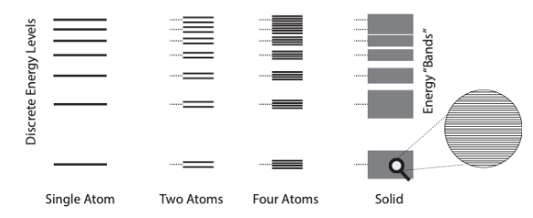
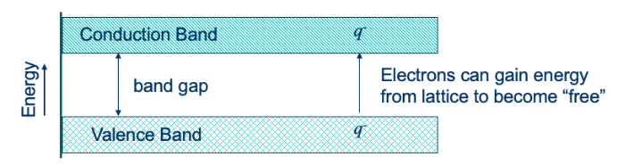
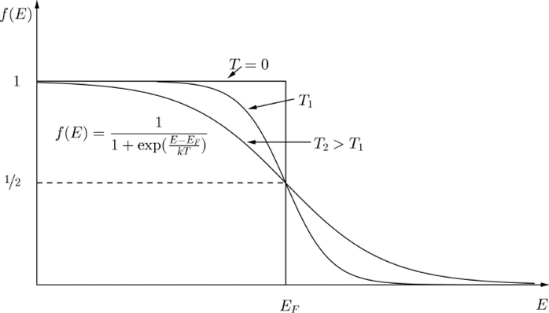
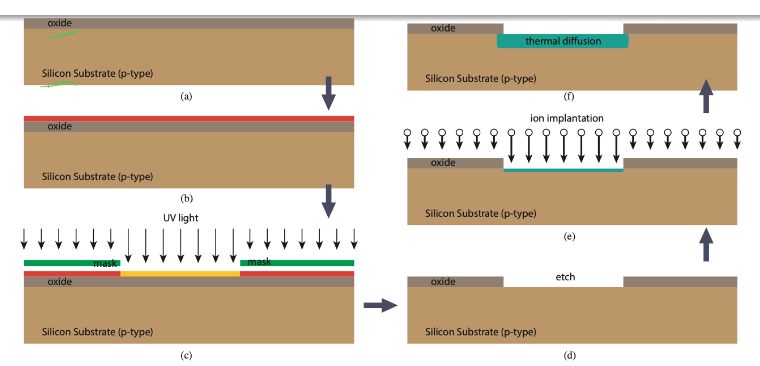

Semiconductor Physics
Table of Contents
1. Conductivity and Resistivity
Say we have a slab of material with length \(l\) and cross-sectional area \(A\). Then, the resistance of this material is given by:
\begin{align} R = \frac{\rho l}{A} \end{align}Intuitively, making a material twice a long is like putting two resistors in series, so resistance should be directly proportional to length. Similarly, increasing the width or the height is like putting resistors in parallel, so resistance is inversely proportional to area. \(\rho\) is the proportionality constant resistivity, and it is a property of the material.
Conductivity is defined as the inverse of resistivity:
\begin{align} \sigma = \frac{1}{\rho} \end{align}If we plot the resistivity on a scale, semiconductors would fall in the middle, between insulators (with high resistivity) and conductors (with low resistivity). This gives semiconductors huge flexibility in terms of becoming insulators or conductors.
2. Energy Levels
Quantum mechanics tells us that the same object can behave either like a particle or a wave. If it’s a wave, we can define its equivalent wavelength (called the deBroglie wavelength) \(\lambda\) for a given particle with momentum \(p\):
\begin{align} \lambda = \frac{h}{p} \end{align}where \(h\) is Planck’s constant.
Now consider an electron traveling around a hydrogen atom. If we view this electron as a wave, then it must form a standing wave, since otherwise as the electron orbits the nucleus the waves would interfere destructively. Therefore, the diameter of its orbit must be an integer multiple of its wavelength:
\begin{align} 2\pi r = n\lambda = \frac{nh}{p} \end{align}The electrostatic force can be equated with what we know from Newtonian mechanics like so:
\begin{align} F = \frac{1}{4\pi\epsilon_0}\frac{e^2}{r^2} = \frac{m_0v^2}{r} = \frac{p^2}{m_0r} \notag \end{align}Solving for radius and momentum, we get:
\begin{align} r = \frac{n^2h^2\epsilon_0}{\pi m_0 e^2} \\ p = \frac{m_0 e^2}{2\epsilon_0 hn} \end{align}The total energy of the system is the sum of kinetic energy and potential energy
\begin{align} E_{\text{total}} &= -\frac{1}{4\pi\epsilon_0}\frac{e^2}{r} + \frac{1}{2}mv^2 \notag \\ &= -\frac{p^2}{m_0} + \frac{p^2}{2m_0} \notag \\ &= -\frac{p^2}{2m_0} \notag \end{align}If we now substitute in our equation for \(p\), all of our constants reduce to one number:
\begin{align} E_{\text{total}} = -\frac{13.6}{n^2} \text{ eV} \end{align}This shows us that even the energy levels are quantized. \(n\) here is the principal quantum number, which can be thought of as denoting which shell the electron is in.
3. Energy Bands
We now know that atoms have discrete energy levels where electrons can exist. When two atoms move close together, their overlapping energy levels split into two, one slightly higher and one slightly lower. This is due to the Pauli exclusion principle: two electrons with the same energy cannot share the same space. As you get more and more atoms, the discrete energy levels form continuous energy bands:

As energy bands get farther away, their potential energy increases (less attraction from the nucleus). At some point, electrons can move freely; the lowest band that they can do this in is called the conduction band, with a minimum energy \(E_c\).
The band adjacent to it, the highest energy band where electrons are still bound to the atom, is called the valence band with a maximum energy \(E_v\). The gap between these bands is called the band gap, with an energy \(E_g\):

Electrons must cross the band gap to be conductive. This gap determines the conductive properties of the material: for an insulator, the gap is very large; for a semiconductor, medium-sized; for a conductor, the bands partially overlap.
When an electron breaks free of the atom (by jumping to the conductive band), it leaves behind a hole. This hole is quickly filled, often by another valence electron, resulting in another hole: the hole moves. The net motion of many electrons in the valence band can therefore be equivalently represented as the motion of a hole. Both free electrons and holes are charge carriers.
It is also possible for a free electron to fill a hole. This process is called recombination, where the electron and the hole annihilate one another, thus depleting the supply of carriers. In thermal equilibrium, a generation process counterbalances this to produce a steady stream of carriers.
3.1. Carrier Distribution
Electrons are Fermions, which means they follow a Fermi-Dirac distribution:

\(E_v\) is somewhere to the left of \(E_f\), and \(E_c\) is somewhere to the right of \(E_f\). \(f(E)\) is the probability of finding an electron in an allowed energy level. \(E_f\) is called the Fermi energy, representing the hypothetical energy level where the probability is 50%. Since this is energy state is in the bandgap, however, the actual probability is 0. What we want to do is see if we can approximate this function in the conduction and valence bands.
In the conduction band, we can assume that \(E-E_f>3kT\). Then we can approximate:
\begin{align} f(E) \approx e^{-\frac{E-E_f}{kT}} \notag \end{align}In the valence band, we can assume that \(E-E_f<3kT\). Then we can approximate:
\begin{align} f(E) \approx 1 - e^{\frac{E-E_f}{kT}} \notag \end{align}The above distributions work when your bands are large enough, and are called Boltzmann distributions (approximates of the Fermi-Dirac distribution).
We can then integrate these regions over the distribution while considering the density of states to get expressions for the number of free holes or free electrons:
\begin{align} n &= N_c e^{\frac{E_f-E_c}{kT}} \notag \\ p &= N_v e^{\frac{E_v-E_f}{kT}} \notag \end{align}In pure silicon (“intrinsic” with no doping), the number of free electrons leave behind the same number of holes. We call this number the intrinsic carrier concentration:
\begin{align} n=p=n_i=N_c e^{\frac{E_i-E_c}{kT}}=N_v e^{\frac{E_v-E_i}{kT}} \notag \end{align}where \(E_i\) is the Fermi level for intrinsic silicon. Then we can get an expression for the two constants \(N_c\) and \(N_v\):
\begin{align} N_c &= n_ie^{\frac{E_c-E_i}{kT}} \notag \\ N_v &= n_ie^{\frac{E_i-E_v}{kT}} \notag \end{align}We can then put these constants back in our original expressions for \(n\) and \(p\) to get:
\begin{align} n &= n_i e^{\frac{E_f-E_i}{kT}} \\ p &= n_i e^{\frac{E_i-E_f}{kT}} \end{align}When we dope with donors (n-type), we get \(E_f > E_i\). On the other hand, when we dope with acceptors (p-type), we get \(E_f < E_i\).
4. Doping
However, this stream of carriers is not actually that much. In order to increase our number of carriers, we can introduce impurities into our material by way of doping.
| III | IV | V |
|---|---|---|
| B | C | N |
| Al | Si | P |
| Ga | Ge | As |
Consider a phosphorous atom bonded to four silicon atoms. Since phosphorous has five valence electrons (group V), it has an extra unbonded electron. We can view this phosphorous atom as a “silicon + hydrogen atom in a sea of silicon atoms,” because silicon has four valence electrons and the hydrogen adds the extra proton and electron. Then, using the relative conductivity of silicon, we find that the \(E_{\text{total}}\) of the extra electron has a very low bonding energy (around \(-0.1 \text{ eV}\)): therefore, it can act as a free electron.
In this way, by doping silicon with phosphorous, we have added an extra free electron. Similarly, if we dope with a group III element, we can add a hole instead.
4.1. Mass Action Law
The mass action law states that under thermal equilibrium, the product of free electron concentration \(n\) and free hole concentration \(p\) is equal to a constant square of intrinsic carrier concentration \(n_i\):
\begin{align} np = n_i^2 \end{align}4.2. Donor Accounting
\(N_D\) is the concentration of donors, and \(N_A\) is the concentration of acceptors. If we dope with more donors than acceptors, and \(N_D > N_A\), then the material is n-type, and the free electron density is given by:
\begin{align} n_o = N_D - N_A \gg n_i \end{align}And the free holes are approximately given by the law of mass action:
\begin{align} p_o = \frac{n_i^2}{N_D-N_A} \end{align}Otherwise, if we have more acceptors than donors, or \(N_A > N_D\), then the material is p-type and we can approximate the number of free holes by:
\begin{align} p_o = N_A - N_D \gg n_i \end{align}And the number of free electrons:
\begin{align} n_o = \frac{n_i^2}{N_A-N_D} \end{align}5. Motion of Free Carriers
5.1. Diffusion Current
Intuitively, putting a drop of ink in a glass of water causes that ink to spread evenly into the water. This is because each molecule of the ink is moving randomly in the water, and thus it is more probable for them to move into areas with less concentration of ink: it diffuses.
Similarly, diffusion of free carriers is their motion due to concentration gradients, a random process due to thermal energy. The velocity that one of these carriers have due to this thermal energy is known as thermal velocity \(v_{\text{th}}\). We can then equate kinetic energy with thermal energy:
\begin{align} \frac{1}{2}m^* v^2_{\text{th}} = \frac{1}{2}kT \notag \end{align}where \(m^*\) is the effective mass of the electron and \(k\) is Boltzmann’s constant.
Fick’s first law tells us that the flux (number of particles crossing a unit area per unit time) is proportional to the opposite of the gradient of charge carriers, \(-\frac{\text{d}n}{\text{d}x}\). Then, we can write
\begin{align} F_n &= -D_n\frac{\text{d}n}{\text{d}x} \notag \\ F_p &= -D_p\frac{\text{d}p}{\text{d}x} \notag \end{align}where \(F_n\) is the flux for electrons and \(F_p\) is the flux for holes. \(n\) is the number of free electrons per unit volume, and \(p\) is the number of holes per unit volume. Then, to convert this to current density (charge crossing a unit area per unit time), we need to multiply each particle by the elementary charge:
\begin{align} J_{\text{n},\text{ diffusion}} &= qD_n\frac{\text{d}n}{\text{d}x} \\ J_{\text{p},\text{ diffusion}} &= -qD_p\frac{\text{d}p}{\text{d}x} \end{align}5.2. Drift Current
The other way free carriers move is via drift. Drift is the average motion of charge carriers due to an applied electric field \(E\).
In a lattice, our electrons are constantly experiencing collisions followed by scattering. We can then treat the momentum of each electron as two components: the “initial momentum” of the particle immediately after a collision, and the additional extra momentum the particle gains over the time between collisions. Therefore, we can write:
\begin{align} p = m^*v_0 + Eqt \notag \end{align}where \(t\) is the time between scattering events. Taking the average of all carriers in our lattice:
\begin{align} \bar{p} = m^*\bar{v} = \frac{1}{N}\sum_{j} m^*v_j + Eqt_j \notag \end{align}When we sum over all the random velocities \(v_j\) of the particles, we are averaging over a large number of random variables with zero mean. Therefore, that term goes to zero, and we are left with:
\begin{align} \bar{p} = m^*\bar{v} = Eq\tau \notag \end{align}where \(\tau\) is the mean scattering time, the average amount of time an electron spends between two collisions.
In many situations we would like to find the average speed gained from this electric field. Thus, we define mobility, after rearranging the previous equation:
\begin{align} \bar{v} = \frac{q\tau}{m^*}E = \mu E \end{align}where \(\mu\) is the mobility of the charge carrier. Then for charge carriers, the drift current is:
\begin{align} v_{\text{dr}} = -\mu_nE \end{align}The drift current density is charge crossing a unit area per unit time, so it is defined as:
\begin{align} J_{\text{n},\text{ drift}} &= qn\mu_nE \\ J_{\text{p},\text{ drift}} &= qp\mu_pE \end{align}From Ohm’s Law, we know that \(J=\sigma E\), where \(\sigma\) is conductivity. Adding up the two previous equations to get total \(J\), we find that conductivity can also be represented as:
\begin{align} \sigma = qn\mu_n + qp\mu_p \end{align}6. Integrated Circuit Materials
Pure silicon is the starting material, which forms the substrate for the integrated circuit. Oxide is used as the insulator:

The oxide insulator is layered on top of the silicon substrate (p-type), and photoresist is layered on top of the oxide. Then, we add a mask to protect areas of photoresist, and we expose the rest using a UV source. Chemicals are then used to etch the areas we want, ion implantation is used to inject dopants into the substrate, and finally temperature is increased to allow dopants to diffuse.